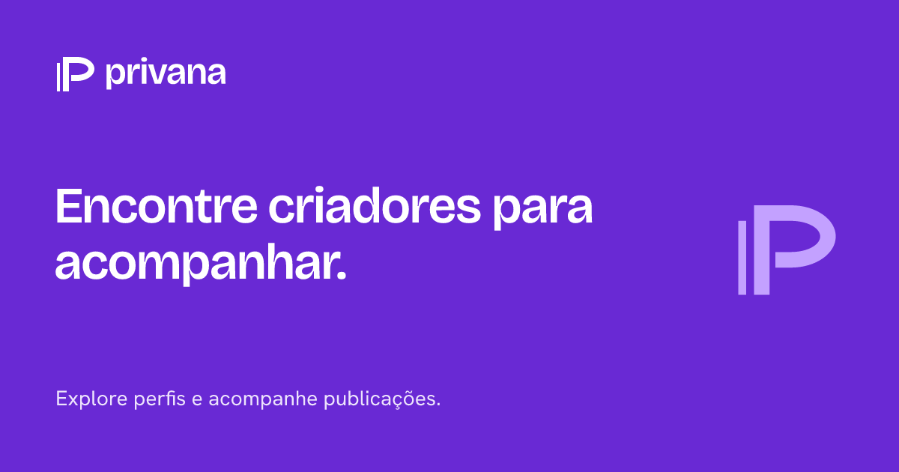
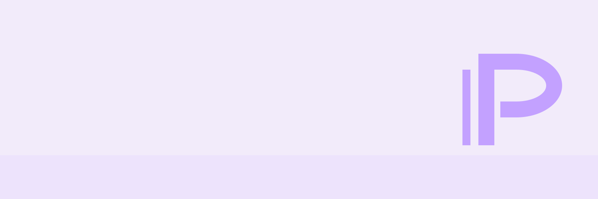

Uma identidade para estar mais perto.
Proximidade é a direção escolhida. Esta é a proposta de marca original para a revisão de KAR-142; ainda não substitui a identidade na aplicação.
O P aberto e a haste paralela criam uma assinatura simples para Privana. A palavra usa Bricolage Grotesque com contornos vetoriais, sem depender de fontes externas nos arquivos finais.
Marca principal e versão inversa
Legibilidade em tamanhos pequenos
Ícones da aplicação
Compartilhamento

Identidades de apoio

Os padrões não representam conteúdo de criadores nem verificação. Guia de uso e limites.